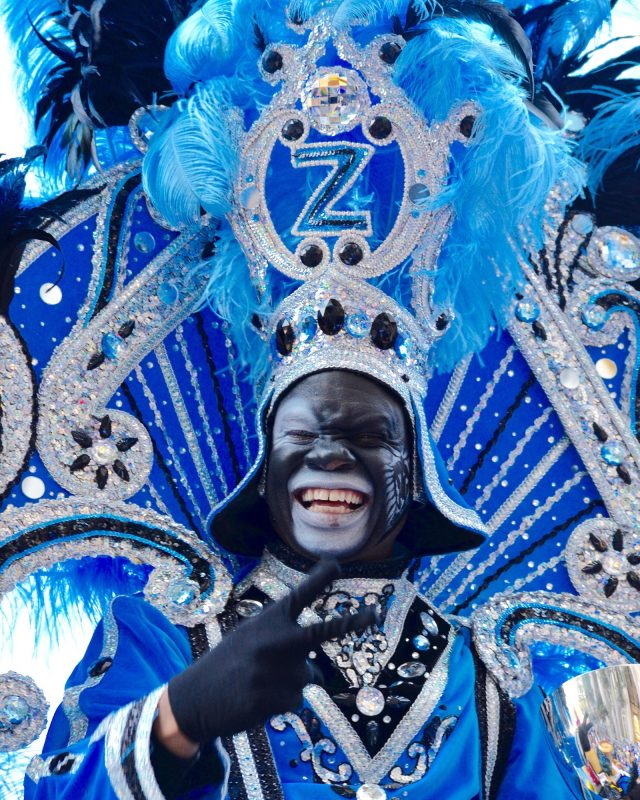
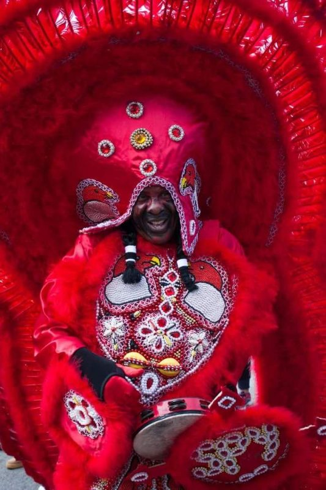

The origins of Mardi Gras can be traced to medieval Europe, passing through Rome and Venice in the 17th and 18th centuries to the French House of the Bourbons. From here, the traditional revelry of "Boeuf Gras," or fatted calf, followed France to her colonies. On March 2, 1699, French-Canadian explorer Jean Baptiste Le Moyne Sieur de Bienville arrived at a plot of ground 60 miles directly south of New Orleans, and named it "Pointe du Mardi Gras" when his men realized it  was the eve of the festive holiday. Bienville also established "Fort Louis de la Louisiane" (which is now Mobile) in 1702. In 1703, the tiny settlement of Fort Louis de la Mobile celebrated America's very first Mardi Gras. In 1704, Mobile established a secret society (Masque de la Mobile), similar to those that form our current Mardi Gras krewes. It lasted until 1709. In 1710, the "Boeuf Gras Society" was formed and paraded from 1711 through 1861. The procession was held with a huge bull's head pushed along on wheels by 16 men. Later, Rex would parade with an actual bull, draped in white and signaling the coming Lenten meat fast. This occurred on Fat Tuesday. New Orleans was established in 1718 by Bienville. By the 1730s, Mardi Gras was celebrated openly in New Orleans, but not with the parades we know today. In the early 1740s, Louisiana's governor, the Marquis de Vaudreuil, established elegant society balls, which became the model for the New Orleans Mardi Gras balls of today. The earliest reference to Mardi Gras "Carnival" appears in a 1781 report to the Spanish colonial governing body. That year, the Perseverance Benevolent & Mutual Aid Association was the first of hundreds of clubs and carnival organizations formed in New Orleans. By the late 1830s, New Orleans held street processions of maskers with carriages and horseback riders to celebrate Mardi Gras. Dazzling gaslight torches, or "flambeaux," lit the way for the krewe's members and lent each event an exciting air of romance and festivity. In 1856, six young Mobile natives formed the Mistick Krewe of Comus, invoking John Milton's hero Comus to represent their organization. Comus brought magic and mystery to New Orleans with dazzling floats (known as tableaux cars) and masked balls. Krewe members remained anonymous.
The parades in New Orleans are organized by social clubs known as krewes; most follow the same parade schedule and route each year. The earliest-established krewes were the Mistick Krewe of Comus, the earliest, Rex, the Knights of Momus and the Krewe of Proteus. Several modern "super krewes" are well known for holding large parades and events, such as the Krewe of Endymion (which is best known for naming celebrities as grand marshals for their parades), the Krewe of Bacchus (similarly known for naming celebrities as their Kings), as well as the Zulu Social Aid & Pleasure Club—a predominantly African American krewe. Float riders traditionally toss throws into the crowds. The most common throws are strings of colorful plastic beads, doubloons, decorated plastic "throw cups", Moon Pies, and small inexpensive toys, but throws can also include lingerie and more sordid items. Major krewes follow the same parade schedule and route each year.The culmination of Mardi Gras in New Orleans begins early on Mardi Gras Day when the Zulu Social Aid & Pleasure Club and the Rex Organization parade through the city. Music, food and elaborate costumes add to the fun-filled day of excitement for revelers of all ages.
While many tourists center their Carnival season activities on Bourbon Street and in New Orleans and Dauphin, major parades originate in the Uptown and Mid-City districts and follow a route along St. Charles Avenue and Canal Street, on the upriver side of the French Quarter. Mardi Gras day traditionally concludes with the "Meeting of the Courts" between Rex and Comus.
On March 2, 1699, French-Canadian explorer Jean Baptiste Le Moyne Sieur de Bienville arrived at a plot of ground 60 miles directly south of New Orleans, and named it "Pointe du Mardi Gras" when his men realized it was the eve of the festive holiday. Bienville also established "Fort Louis de la Louisiane" (which is now Mobile) in 1702. In 1703, the tiny settlement of Fort Louis de la Mobile celebrated America's very first Mardi Gras.
In 1704, Mobile established a secret society (Masque de la Mobile), similar to those that form our current Mardi Gras krewes. It lasted until 1709. In 1710, the "Boeuf Gras Society" was formed and paraded from 1711 through 1861. The procession was held with a huge bull's head pushed along on wheels by 16 men. Later, Rex would parade with an actual bull, draped in white and signaling the coming Lenten meat fast. This occurred on Fat Tuesday.
New Orleans was established in 1718 by Bienville. By the 1730s, Mardi Gras was celebrated openly in New Orleans, but not with the parades we know today. In the early 1740s, Louisiana's governor, the Marquis de Vaudreuil, established elegant society balls, which became the model for the New Orleans Mardi Gras balls of today.
The earliest reference to Mardi Gras "Carnival" appears in a 1781 report to the Spanish colonial governing body. That year, the Perseverance Benevolent & Mutual Aid Association was the first of hundreds of clubs and carnival organizations formed in New Orleans.
By the late 1830s, New Orleans held street processions of maskers with carriages and horseback riders to celebrate Mardi Gras. Dazzling gaslight torches, or "flambeaux," lit the way for the krewe's members and lent each event an exciting air of romance and festivity. In 1856, six young Mobile natives formed the Mistick Krewe of Comus, invoking John Milton's hero Comus to represent their organization. Comus brought magic and mystery to New Orleans with dazzling floats (known as tableaux cars) and masked balls. Krewe members remained anonymous.
Newspapers began to announce Mardi Gras events in advance, and they even printed "Carnival Edition" lithographs of parades' fantastic float designs (after they rolled, of course - themes and floats were always carefully guarded before the procession). At first, these reproductions were small, and details could not be clearly seen. But beginning in 1886 with Proteus' parade "Visions of Other Worlds," these chromolithographs could be produced in full, saturated color, doing justice to the float and costume designs of Carlotta Bonnecase, Charles Briton and B.A. Wikstrom. Each of these designers' work was brought to life by talented Parisian paper-mache' artist Georges Soulie', who for 40 years was responsible for creating all of Carnival's floats and processional outfits.
1872 was the year that a group of businessmen invented a King of Carnival, Rex, to preside over the first daytime parade. To honor the visiting Russian Grand Duke Alexis Romanoff, the businessmen introduced Romanoff's family colors of purple, green and gold as Carnival's official colors. Purple stands for justice; gold for power; and green for faith. This was also the Mardi Gras season that Carnival's improbable anthem, "If Ever I Cease to Love," was cemented, due in part to the Duke's fondness for the tune.
The following year, floats began to be constructed entirely in New Orleans instead of France, culminating with Comus' magnificent "The Missing Links to Darwin's Origin of Species," in which exotic paper-mache' animal costumes served as the basis for Comus to mock both Darwin's theory and local officials, including Governor Henry Warmoth. In 1875, Governor Warmoth signed the "Mardi Gras Act," making Fat Tuesday a legal holiday in Louisiana, which it still is.
Like Comus and the Twelfth Night Revelers, most Mardi Gras krewes today developed from private social clubs with restrictive membership policies. Since all of these parade organizations are completely funded by their members, New Orleanians call it the "Greatest Free Show on Earth!"

The Mardi Gras Indians are comprised, in large part, of the
African-American communities of New Orleans's inner city. While
these Indians have paraded for well over a century, their parade
is perhaps the least recognized Mardi Gras tradition.
"Mardi Gras Indians--the parade most white people don't see. The
ceremonial procession is loose, the parade is not scheduled for
a particular time or route...that is up to the Big Chief." -
Larry Bannock
Traditional Mardi Gras organizations form a "krewe." A krewe
often names their parade after a particular Roman or Greek
mythological hero or god. The ranking structure of a Mardi Gras
Krewe is a parody of royalty: King, Queen, Dukes, Knights and
Captains, or some variation of that theme. Many of the more
established krewes allow membership by invitation only.
Few in the ghetto felt they could ever participate
in the typical New Orleans parade. Historically, slavery and
racism were at the root of this cultural separation. The black
neighborhoods in New Orleans gradually developed their own style
of celebrating Mardi Gras. Their krewes are named for imaginary
Indian tribes according to the streets of their ward or gang.
The Mardi Gras Indians named themselves after native Indians to
pay them respect for their assistance in escaping the tyranny of
slavery. It was often local Indians who accepted slaves into
their society when they made a break for freedom. They have
never forgotten this support.